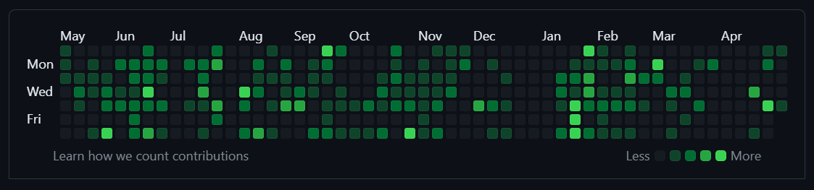
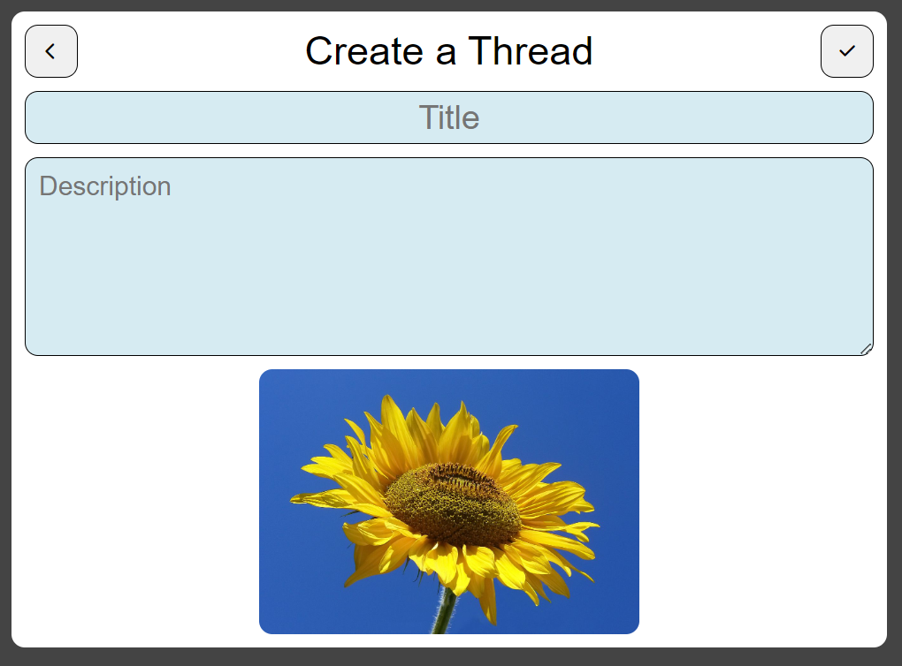
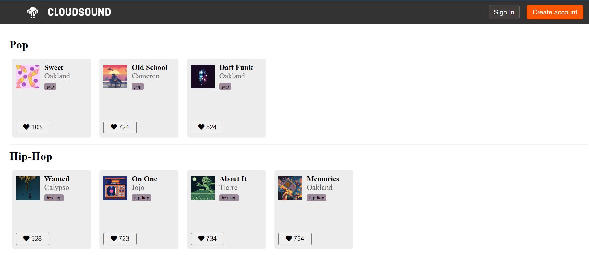

About Me

My software development journey started with a whack! After smashing my thumb,
I decided enough was enough as far as smashed thumbs go, and began looking for a new career.
I attended App Academy, where I learned programming languages including Python,
and JavaScript, as well as other frameworks
and libraries including React, SQLAlchemy, Flask, and more.
During my time at App Academy, I developed two full-stack applications.
Findex is a full-stack forum application, solely developed by myself to showcase my current skills.
CloudSound, a full-stack music sharing platform, was created on a shared codebase with a small team.
Contact Me!
Findex

Findex - forum application.
-
Implemented features allowing a logged-in user to create a discussion thread or comment, read, update or
delete their post using Flask API and PostgreSQL, enabling users to ask questions and share information
collectively.
-
Created the ability for users to upload images by employing AWS S3 for file storage, allowing other
individuals to view these images, and improving text-based communication.
- Designed an intuitive UI using React components with vanilla CSS and grid/flexbox.
- Utilized SQLAlchemy for database updates during continued development.
CloudSound

CloudSound - music application.
-
Employed GitHub's technologies such as project boards to track project development, plan features, and
reduce development time.
-
Contributed to a shared codebase and built the playlist feature, enabling users to create playlists, add
songs to those playlists, as well as view, update, or delete a playlist.
-
Built a Redux state structure using OOP which benefitted rendering of requested data when a user interacts
with the application, providing instant user feedback.
-
Outlined and tested other features, by adding boilerplate code to backend API and using Test Driven
Development to ensure robust functionality.
Contact
-
Please feel free to reach out via email or online profiles!
-
Resume